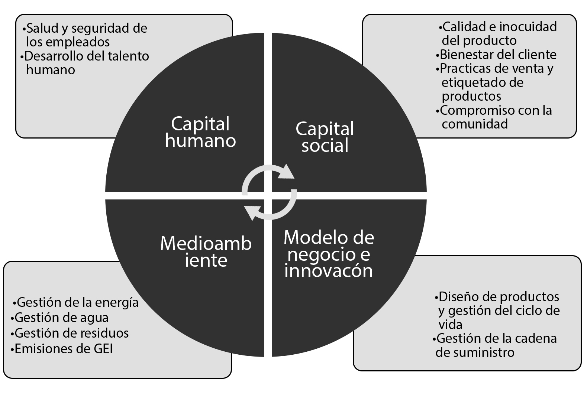

Seccion Sustentabilidad
En Molino Campodónico somos conscientes de que la sustentabilidad está integrada en la forma en la que operamos el negocio. Tenemos el desafío de crear valor en armonía con el cuidado del planeta y el respeto por las personas.
Para ello, hemos alineado nuestra estrategia de negocio buscando potenciar los impactos positivos y mitigar los impactos negativos a lo largo de toda la cadena de valor.
Juntos podemos crear un futuro que proteja nuestro planeta para las generaciones futuras.
Los invitamos a conocer nuestro Plan de Sustentabilidad 2022 que hemos diseñado en conjunto con CR | Consultora en Sustentabilidad, en línea con las principales iniciativas internacionales de gestión y reporte.
NUESTRO PLAN DE SUSTENTABILIDAD
El Plan de Sustentabilidad Molino Campodónico 2022, comprende 4 áreas de impacto y 12 temas relevantes.
PAPITAL SOCIAL
- Calidad e Inocuidad del Producto: Nuestro programa de inocuidad alimentaria garantiza a los clientes el cumplimiento de los más altos estándares de seguridad y calidad alimentaria en todo el proceso productivo, contribuyendo al cuidado y seguridad de los productos y a comunicar la calidad de los mismos en las industrias y consumidores finales, siendo parte de una cadena de suministro sustentable.
- Bienestar del cliente: Nuestra línea de productos orgánicos, nos permite posicionarnos en un segmento cada vez más amplio y con diversas necesidades en cuanto a ofertas más saludables y nutritivas.
- Prácticas de venta y etiquetado de productos: Nuestros productos cuentan con información específica y detallada para garantizar la seguridad alimentaria e informar a los consumidores sobre el contenido nutricional, así como los métodos de producción que se han utilizado.
- Compromiso con la comunidad: Realizamos numerosas acciones que contribuyen a mejorar el ámbito institucional y social de la Ciudad de La Plata. Contamos con acuerdos de donaciones en más de 30 organismos, entre los que se encuentran, merenderos, comedores, hogares e instituciones educativas. También colaboramos con el Cuartel de Bomberos de la Plata y con diversas instituciones locales.
MODELO DE NEGOCIO E INNOVACIÓN:
- Diseño de productos y gestión del ciclo de vida: Buscamos reducir el impacto ambiental del packaging de nuestros productos, innovando con el uso de materiales que permitan su posterior reciclado o compostaje.
- Gestión de la cadena de suministro: Buscamos la implementación de prácticas sustentables en toda la cadena de suministro, estableciendo alianzas con proveedores y clientes claves que permitan gestionar los impactos ambientales y sociales en toda la cadena de valor.
MEDIOAMBIENTE:
- Gestión de la Energía: Estamos implementando un Plan de Eficiencia Energética que nos permitirá lograr un mejor equilibrio entre el uso de electricidad procedente de red y el uso de energías alternativas.
- Gestión del agua: El agua es un recurso indispensable para nuestro proceso productivo. Hacemos un consumo consciente de este recurso y no generamos efluentes como descarte de nuestra producción.
- Gestión de residuos: Hemos implementado un programa de eliminación de plásticos de un solo uso, con el objetivo de reemplazar el uso de material descartable por elementos que puedan ser reutilizados. También contamos con un programa de gestión de residuos, que tiene por objetivo la separación de residuos en origen y su posterior tratamiento. Para ello, realizamos un acuerdo con la Unión de Cartoneros de la Plata, quienes se encargan de retirar el material reciclable para su posterior procesamiento.
- Emisiones de GEI: Somos conscientes de la importancia de medir las emisiones de Gases de Efecto Invernadero (GEI) para tomar medidas de compensación, mitigación y reducción.
CAPITAL HUMANO:
- Salud y seguridad de los empleados: Estamos convencidos de que un buen desempeño en la gestión de salud y la seguridad de la fuerza laboral ayuda a crear mejores ambientes de trabajo, logrando un aumento de la productividad y mejora en las relaciones laborales.
- Desarrollo del talento humano: Nuestra organización es una gran generadora de empleo en la Ciudad de La Plata, y constituye un punto de entrada al mundo laboral para los jóvenes. Contamos con programas de pasantías, tanto para estudiantes del nivel secundario como terciario. Ofrecemos salarios competitivos, entornos de trabajo seguros y oportunidades de crecimiento profesional.
¿Querés conocer más sobre la Política de Sustentabilidad de Molino Campodónico?
Envianos un correo a: (proporcionar una dirección de correo electrónico)